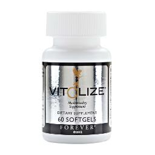
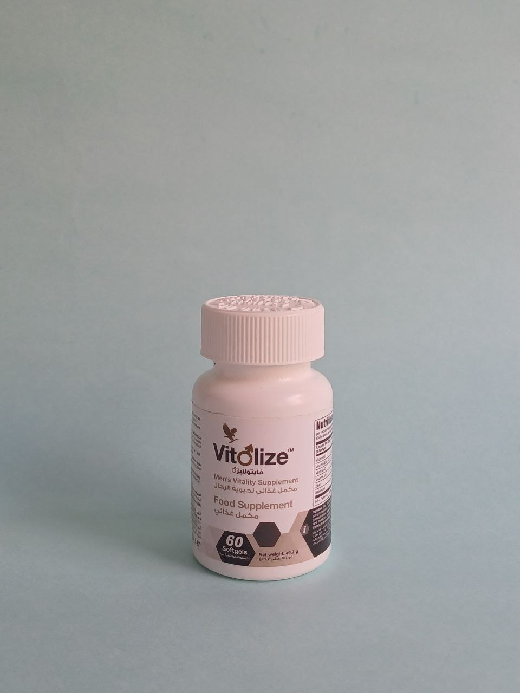
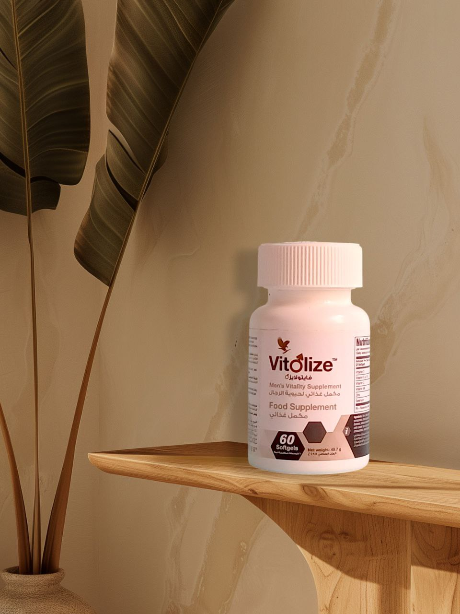

يدعم صحة البروستات و مصمم حصريًا للرجال
تم تصميم فيتوليز® من الألف إلى الياء حصريا للرجال. تساعد تركيبتنا الشاملة في دعم كل من صحة البروستات إلى وظيفة الخصية وصحة البول. يوفر أيضًا هذا المزيج الغذائي الحصري للرجال التوازن المثالي بين الفيتامينات والنباتات والمعادن.
تشكل صحة البروستات أولوية لكثير من الرجال البالغين، وخاصة أولئك الذين تزيد أعمارهم عن 50 عامًا. لقد اخترنا بعناية المكونات لتقديم الدعم بطريقة طبيعية. ثبت أن الفيتامينات C و D و E والليكوبين والسيلينيوم والزنك تساعد في تعزيز صحة البروستات.
تساعد إضافة زيت الليكوبين، والبايغوم، وزيت بذور اليقطين على الحفاظ على صحة البول.
هذا المزيج الرائع معبأ في كبسولات هلامية سهلة الهضم، مما يجعل من السهل اتباع نمط حياة نشيط وصحي.